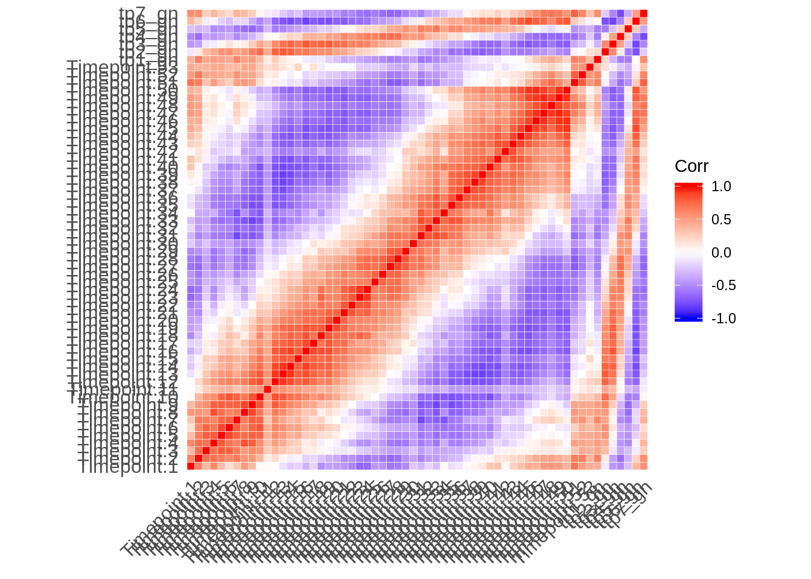

Last updated: 2018-09-25
Code version: f9c0f68
First we need to import normalized RNA-seq and microarray data:
seq3d7 <- readr::read_tsv("../data/array_correlations/selected_globnorm_3d7_rpkms.txt")
seqhb3 <- readr::read_tsv("../data/array_correlations/selected_globnorm_hb3_rpkms.txt")
seqit <- readr::read_tsv("../data/array_correlations/selected_globnorm_it_rpkms.txt")
array3d7 <- readr::read_tsv("../data/array_correlations/selected_3d7array_foldchanges_v3_geneids.txt")tmp <- dplyr::inner_join(array3d7, seq3d7, by = c("GeneID"="gene_id"))
corr <- round(cor(na.omit(tmp[2:61])), 2)
ggcorrplot::ggcorrplot(corr, hc.order = FALSE, outline.col = "white")
R version 3.5.0 (2018-04-23)
Platform: x86_64-pc-linux-gnu (64-bit)
Running under: Gentoo/Linux
Matrix products: default
BLAS: /usr/local/lib64/R/lib/libRblas.so
LAPACK: /usr/local/lib64/R/lib/libRlapack.so
locale:
[1] LC_CTYPE=en_US.UTF-8 LC_NUMERIC=C
[3] LC_TIME=en_US.UTF-8 LC_COLLATE=en_US.UTF-8
[5] LC_MONETARY=en_US.UTF-8 LC_MESSAGES=en_US.UTF-8
[7] LC_PAPER=en_US.UTF-8 LC_NAME=C
[9] LC_ADDRESS=C LC_TELEPHONE=C
[11] LC_MEASUREMENT=en_US.UTF-8 LC_IDENTIFICATION=C
attached base packages:
[1] parallel stats4 stats graphics grDevices utils datasets
[8] methods base
other attached packages:
[1] BSgenome.Pfalciparum.PlasmoDB.v24_1.0
[2] BSgenome_1.48.0
[3] rtracklayer_1.40.6
[4] Biostrings_2.48.0
[5] XVector_0.20.0
[6] GenomicRanges_1.32.6
[7] GenomeInfoDb_1.16.0
[8] org.Pf.plasmo.db_3.6.0
[9] AnnotationDbi_1.42.1
[10] IRanges_2.14.10
[11] S4Vectors_0.18.3
[12] Biobase_2.40.0
[13] BiocGenerics_0.26.0
[14] scales_1.0.0
[15] cowplot_0.9.3
[16] magrittr_1.5
[17] forcats_0.3.0
[18] stringr_1.3.1
[19] dplyr_0.7.6
[20] purrr_0.2.5
[21] readr_1.1.1
[22] tidyr_0.8.1
[23] tibble_1.4.2
[24] ggplot2_3.0.0
[25] tidyverse_1.2.1
loaded via a namespace (and not attached):
[1] nlme_3.1-137 bitops_1.0-6
[3] matrixStats_0.54.0 lubridate_1.7.4
[5] bit64_0.9-7 httr_1.3.1
[7] rprojroot_1.3-2 tools_3.5.0
[9] backports_1.1.2 utf8_1.1.4
[11] R6_2.2.2 DBI_1.0.0
[13] lazyeval_0.2.1 colorspace_1.3-2
[15] withr_2.1.2 tidyselect_0.2.4
[17] bit_1.1-14 compiler_3.5.0
[19] git2r_0.23.0 cli_1.0.0
[21] rvest_0.3.2 xml2_1.2.0
[23] DelayedArray_0.6.5 labeling_0.3
[25] digest_0.6.15 Rsamtools_1.32.3
[27] rmarkdown_1.10 R.utils_2.6.0
[29] pkgconfig_2.0.2 htmltools_0.3.6
[31] rlang_0.2.2 readxl_1.1.0
[33] rstudioapi_0.7 RSQLite_2.1.1
[35] bindr_0.1.1 jsonlite_1.5
[37] BiocParallel_1.14.2 R.oo_1.22.0
[39] RCurl_1.95-4.11 GenomeInfoDbData_1.1.0
[41] Matrix_1.2-14 fansi_0.3.0
[43] Rcpp_0.12.18 munsell_0.5.0
[45] R.methodsS3_1.7.1 stringi_1.2.4
[47] yaml_2.2.0 SummarizedExperiment_1.10.1
[49] zlibbioc_1.26.0 plyr_1.8.4
[51] grid_3.5.0 blob_1.1.1
[53] crayon_1.3.4 lattice_0.20-35
[55] haven_1.1.2 hms_0.4.2
[57] knitr_1.20 pillar_1.3.0
[59] reshape2_1.4.3 XML_3.98-1.16
[61] glue_1.3.0 evaluate_0.11
[63] modelr_0.1.2 cellranger_1.1.0
[65] gtable_0.2.0 assertthat_0.2.0
[67] broom_0.5.0 ggcorrplot_0.1.2
[69] GenomicAlignments_1.16.0 memoise_1.1.0
[71] workflowr_1.1.1 bindrcpp_0.2.2 This R Markdown site was created with workflowr